or: four men, one apartment, zero boundaries
it started, as most disasters do, with a listing.
"four bedroom. two bath. utilities included."
they applied separately. they were accepted together.
no one asked if they would get along. (they did not.)
this is what happened next.
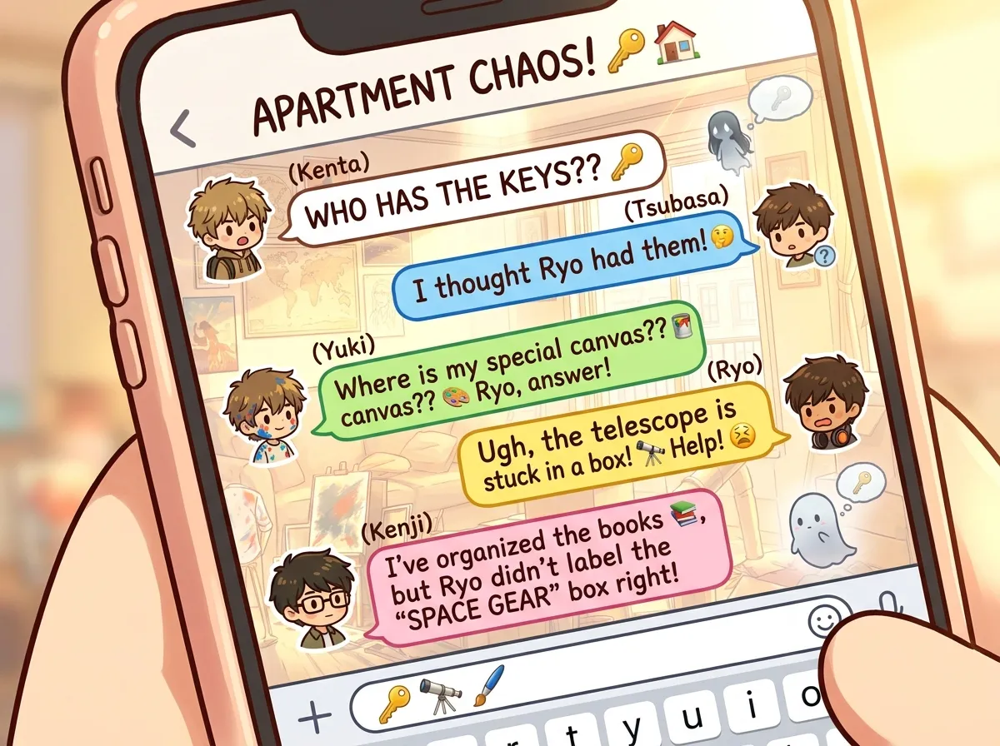
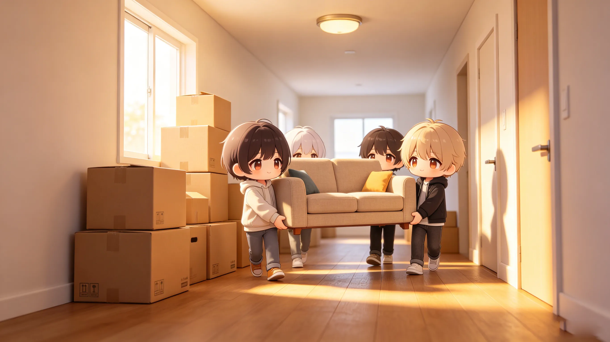
sylus arrived first. black car. black boxes. black furniture.
he claimed the master bedroom. unpacked everything in forty minutes. then stood in the living room, watching the door.
zayne arrived second. his boxes were labeled. color-coded. alphabetized.
"you labeled your boxes by category," said sylus.
"organization is efficiency."
"you labeled the labels."
"redundancy."
zayne took the bedroom next to the bathroom. (strategic.)
rafayel arrived third. his car was full. boxes. canvases. paint. a easel. a plant.
"you brought a plant," said zayne.
"his name is fernando."
"you named a plant."
"plants have feelings."
rafayel took the room with the best light. (for painting. he said.)
xavier arrived fourth. two hours late. carrying a backpack.
"where are your boxes," asked rafayel.
"i travel light."
"that's a backpack."
"it contains everything i need."
"your room is empty."
"i'll fill it eventually."
xavier walked to the couch. sat down. didn't move.
"you have a room," said zayne.
"the couch is comfortable."
"you haven't tried the bed."
"i don't need to."
he lay down. closed his eyes. (he was asleep in thirty seconds.)
"we've been here for an hour," said rafayel.
"i told you. he's trained."
sylus looked at xavier. then at the empty room down the hall.
"if he doesn't use it, i'm taking it for storage."
"you already have the master," said rafayel.
"i need options."
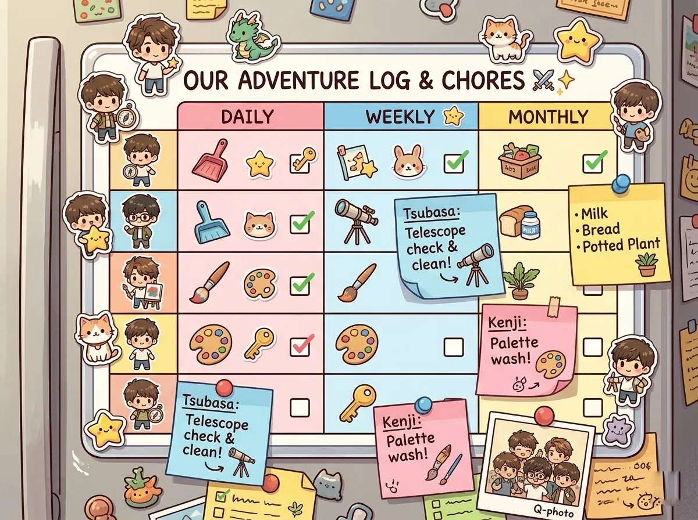
zayne spent his first evening creating a chore chart.
it was laminated.
it had color-coding.
it included a rotation schedule, a penalty system, and a section for "comments and concerns."
he taped it to the refrigerator.
rafayel walked by. looked at it. walked away.
"did you see the chore chart?" asked zayne.
"i saw something."
"it's the chore chart."
"it's a lot of colors."
"the colors indicate categories."
rafayel stared. "i'm not doing dishes."
"everyone does dishes."
"i'm an artist. my hands are sensitive."
"you paint with your hands."
"EXACTLY."
sylus walked by. glanced at the chart. didn't stop.
"sylus, you need to choose a chore."
"no."
"it's required."
"by whom."
"by the chart."
sylus looked at zayne. "the chart doesn't have authority."
"the chart has consensus."
"i didn't consent."
zayne sighed. added a new column: "Sylus - ???"
xavier was still on the couch. still asleep.
zayne walked over. "xavier. chores."
xavier didn't move.
"xavier."
one eye opened. "i'll do the snack inventory."
"that's not a chore."
"it's essential."
the eye closed.
zayne stared at the chart. no one had signed up for anything.
he signed himself up for everything. then went to bed. frustrated.
the next morning, the chart was gone.
"where's the chore chart," asked zayne.
rafayel pointed at the trash can.
zayne retrieved it. it had coffee spilled on it.
"who spilled coffee on the chore chart"
silence.
"i'll make a new one."
he made a new one. (it was also laminated.)
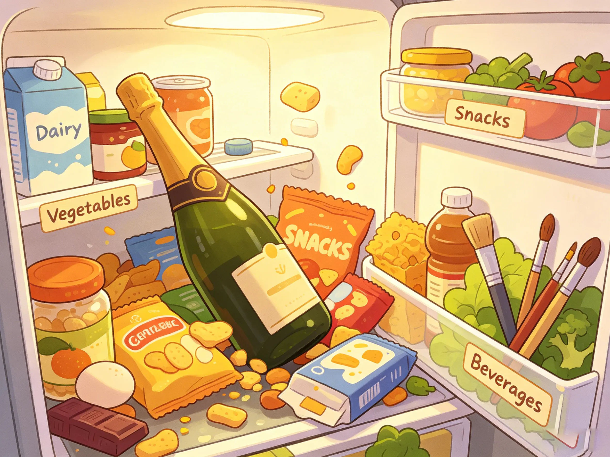
the refrigerator was organized. (by zayne.)
left side: savory. right side: sweet. top shelf: drinks. bottom drawer: vegetables.
it lasted three days.
rafayel put his paintbrushes in the vegetable drawer. "to preserve the bristles."
zayne found them. "these are not vegetables."
"they're ART SUPPLIES."
"they don't belong in the fridge."
"the cold keeps them fresh."
zayne removed them. put them on rafayel's pillow. (passive-aggressive.)
sylus put a bottle of champagne in the fridge. it took up an entire shelf.
"we don't need an entire shelf for champagne," said zayne.
"it's not champagne. it's vintage."
"it's taking up space."
"it's taking up the space it deserves."
xavier's snacks were everywhere. chips in the cheese drawer. chocolate in the vegetable drawer.
"xavier, your snacks are disorganized."
"organized chaos."
"it's chaos."
"same thing."
zayne reorganized the fridge. again. (he kept count. day 4.)
the next morning, his lunch was missing.
"who took my lunch"
silence.
"i labeled it. 'ZAYNE - DO NOT TOUCH.'"
rafayel looked guilty. (he ate it.)
"i'll buy you a new lunch."
"it's not about the lunch. it's about the principle."
"what principle"
"the principle of respecting labeled food."
rafayel bought him a new lunch. (he ate that one too.)
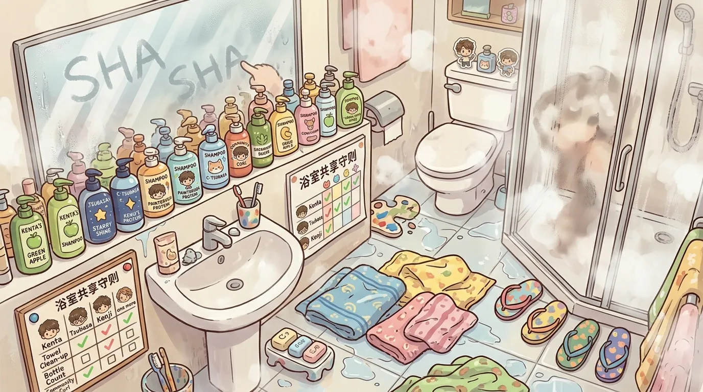
there were two bathrooms. one near the master bedroom. one near the other rooms.
sylus claimed the master bathroom. (obviously.)
the other bathroom was shared by three people.
it was chaos.
rafayel spent forty-five minutes in the shower. every day.
"forty-five minutes is excessive," said zayne, knocking on the door.
"i'm exfoliating."
"you've been exfoliating for half an hour."
"i have a lot of skin."
zayne waited. checked his watch. knocked again.
"i need to use the bathroom."
"there's another one."
"sylus is in it."
"then wait."
zayne waited. for twelve minutes. rafayel emerged. wrapped in a towel. singing.
"you were singing."
"i was practicing."
"in the shower."
"the acoustics are good."
zayne entered the bathroom. it was wet. everywhere. products everywhere.
"there are seven bottles on the counter."
"they're different."
"they're all shampoo."
"different SHAMPOOS."
zayne sighed. cleaned the bathroom. (he added it to the chore chart. no one cared.)
the next day, xavier fell asleep in the bathroom.
"xavier. XAVIER."
xavier opened his eyes. "the floor is warm."
"it's a bathroom floor."
"heated."
"it's not heated. you've been here for two hours."
"time is subjective."
rafayel started using the master bathroom. (sylus didn't notice. or didn't care.)
zayne started waking up earlier. to beat the rush.
the schedule was never official. but it worked. barely.
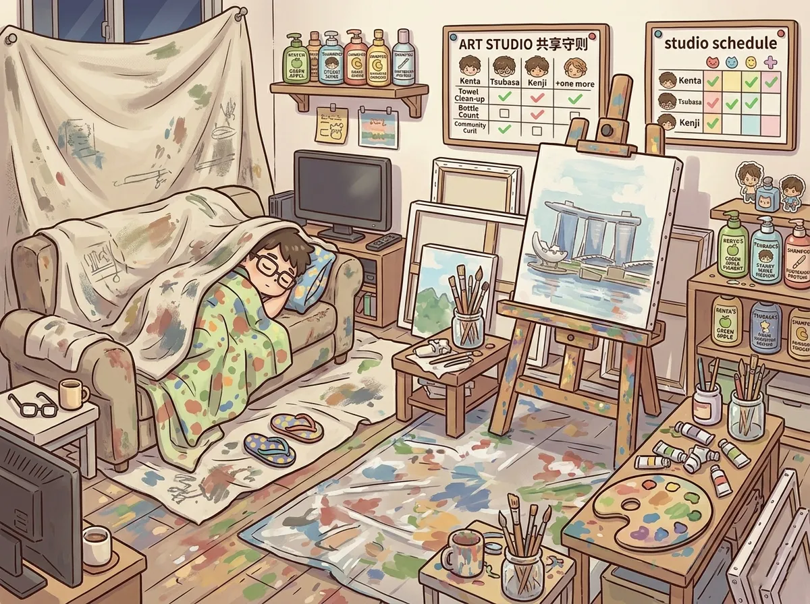
rafayel decided the living room had "good energy."
he moved his easel in. then his canvases. then his paints.
"you can't turn the living room into a studio," said zayne.
"it's not a studio. it's a creative space."
"it's a shared space."
"sharing means compromising."
rafayel's creative space expanded. day by day. paint on the floor. brushes in cups. canvases leaning against the couch.
xavier was still on the couch. sleeping. covered in drop cloths.
"xavier, you're under a drop cloth."
"it's warm."
"it's a paint cover."
"multi-purpose."
sylus walked through the living room. stepped over a canvas. didn't comment.
"sylus, aren't you going to say something?" asked zayne.
"about what."
"about the living room."
"i don't use the living room."
"you walk through it."
"walking is not using."
zayne gave up. (he added a new chore: "clean paint brushes." no one did it.)
one week later, rafayel finished a painting. it was of the living room. (with all of them in it. asleep. annoyed. ignoring each other.)
he hung it on the wall.
"that's... actually good," said zayne.
"i know."
"don't let it go to your head."
"too late."
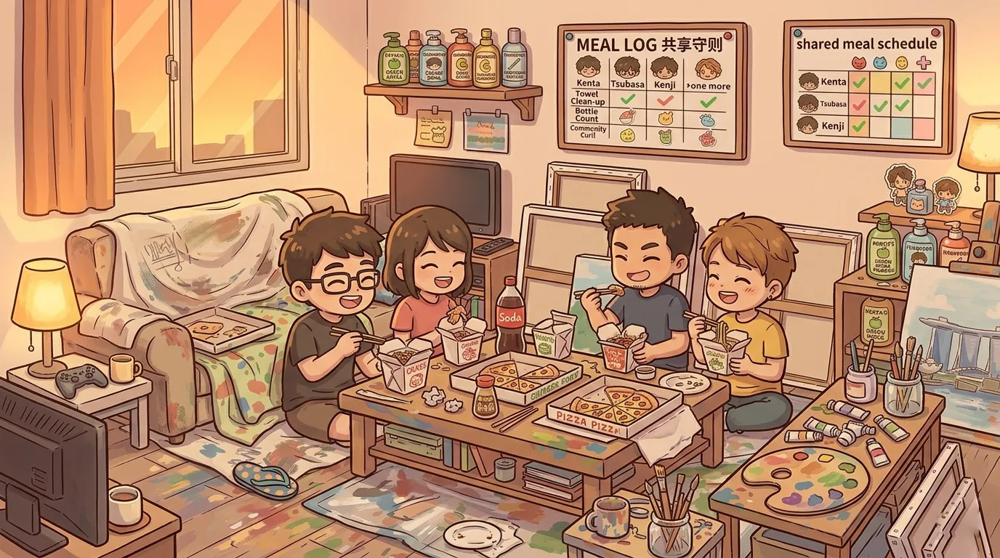
zayne suggested a family dinner. "once a week. we cook together."
"no," said sylus.
"yes," said rafayel. (he just wanted to argue.)
"it's non-negotiable," said zayne.
"everything is negotiable," said sylus.
"this isn't."
the first dinner was scheduled for sunday.
zayne made a list. assigned roles. sylus: main dish. rafayel: salad. xavier: dessert. zayne: everything else.
sylus ordered takeout. "the main dish is delivered."
"that's not cooking."
"it's outsourcing."
rafayel made a salad. (he put flowers in it. edible flowers. but still flowers.)
"these are flowers," said zayne.
"garnish."
"it's a salad."
"a beautiful salad."
xavier brought a bag of cookies. store-bought.
"you didn't make these."
"i opened the bag. that's effort."
they ate together. at the coffee table. because the dining table was covered in paint.
it was chaotic. messy. loud.
"this is terrible," said sylus.
"you're eating it," said rafayel.
"i'm tolerating it."
xavier finished three cookies. "can we do this every week?"
"no," said sylus and zayne at the same time.
"that's a no from them. not from me."
they did it every week. (sylus kept ordering takeout. rafayel kept putting flowers in everything. xavier kept bringing cookies.)
zayne pretended to hate it. (he didn't.)
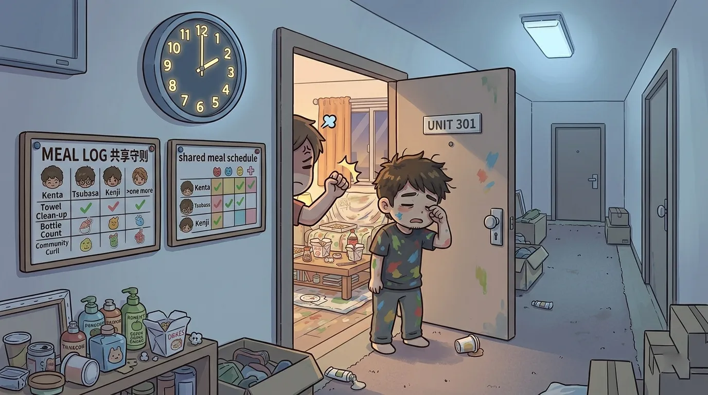
rafayel painted at 2am. (inspiration struck.)
the downstairs neighbor knocked on the door. "it's two in the morning."
"art doesn't sleep."
"art also doesn't live in an apartment building."
rafayel closed the door. kept painting. (quieter.)
the neighbor knocked again. this time, sylus answered.
"yes."
"the noise—"
"will stop."
the neighbor left. (quickly.)
sylus walked to rafayel's room. "paint during daylight."
"daylight is for inspiration. night is for execution."
"night is for sleeping."
"you don't sleep."
"i don't paint either."
rafayel painted during daylight. (sometimes.)
then xavier started sleepwalking.
he walked into the kitchen at 3am. opened the refrigerator. stared. closed it. walked back to the couch.
zayne witnessed it. "xavier. are you awake."
"no."
"you're talking."
"sleep-talking."
the neighbor knocked again. "there's someone in the hallway."
it was xavier. sleepwalking. in his pajamas.
zayne retrieved him. "we're sorry."
"this is the third time this week."
zayne added a new rule: "lock the door from the inside."
xavier sleepwalked into the locked door. woke up. went back to bed.
problem solved. (temporarily.)
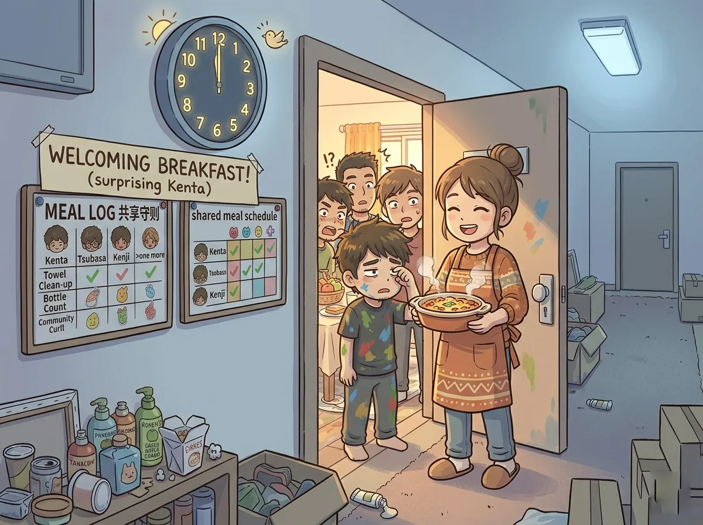
one day, someone knocked on the door.
sylus answered. (he was closest.)
a woman stood there. holding a casserole dish.
"hi. i'm your neighbor. from across the hall."
sylus stared.
"i heard you moved in. i made too much food."
she handed him the dish. walked away. didn't wait for a thank you.
sylus closed the door. looked at the casserole. didn't know what to do.
"who was that," asked rafayel.
"the neighbor."
"the one we annoyed"
"different neighbor."
zayne took the casserole. inspected it. "it looks edible."
"high praise," said rafayel.
they ate it. (it was good. no one admitted it.)
"we should thank her," said zayne.
"no," said sylus.
"it's polite."
"i don't do polite."
rafayel wrote a thank you note. (on a canvas. because he didn't have paper.)
he left it at her door. she never mentioned it.
but she left another casserole the next week.
and the week after.
"she's feeding us," said xavier, who had woken up for the casserole.
"she's being neighborly," said zayne.
"she's feeding us because we're hopeless."
no one disagreed.
they never learned her name. but they looked forward to the casseroles.
it was the closest thing they had to a family dinner.
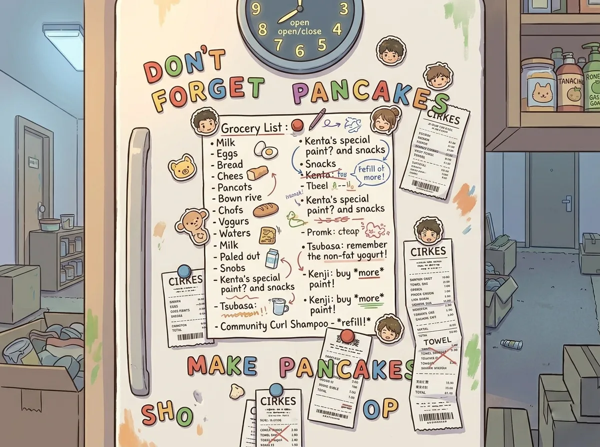
zayne started a grocery list. on the refrigerator. with a magnet.
"write down what we need."
the list grew.
zayne: milk, eggs, bread, vegetables.
rafayel: avocados, limes, edible flowers, organic almond milk (unsweetened).
sylus: champagne. (just champagne. nothing else.)
xavier: chips, cookies, chocolate, more chips, more cookies.
"this is not a balanced grocery list," said zayne.
"it's a democratic list," said rafayel.
"it's chaos."
zayne went grocery shopping alone. bought what was on the list. (plus vegetables.)
he came home. unpacked. put everything away.
the next day, the avocados were gone. (rafayel made guacamole. ate all of it.)
the champagne was gone. (sylus drank it. alone. in his room.)
the chips were gone. (xavier.)
"we need to share," said zayne.
"we do share," said rafayel. "i shared the guacamole with myself."
"that's not sharing."
"it's intra-personal sharing."
zayne started hiding snacks. in his room. (no one found them.)
the grocery list got longer. more passive-aggressive notes appeared.
"who wrote 'stop eating my yogurt' on the list"
silence.
"it was me," said xavier. "someone ate my yogurt."
"you don't eat yogurt."
"i wanted to start."
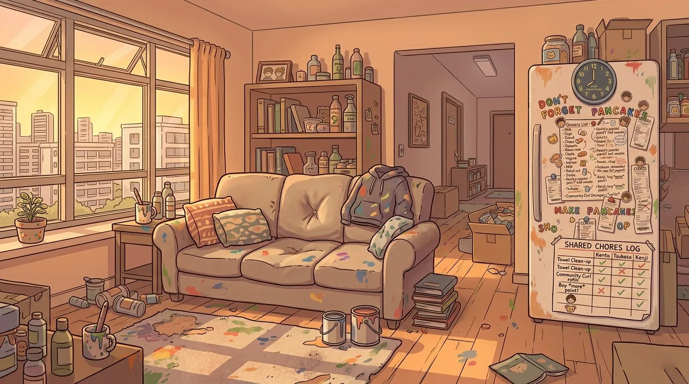
three months passed. the apartment was still standing. (barely.)
the chore chart was still on the refrigerator. ignored. but present.
rafayel's paint stains were everywhere. on the floor. on the walls. on the ceiling. (no one asked how.)
xavier had finally moved into his room. (after sylus threatened to store boxes on the couch.)
he still slept on the couch sometimes. out of habit.
sylus had stopped wearing sunglasses indoors. (progress.)
zayne had stopped reorganizing the fridge every day. (he reorganized it every other day.)
they weren't friends. not exactly.
but they weren't strangers anymore.
they were... roommates.
which was, somehow, harder than being enemies.
one night, they sat in the living room. (rafayel had moved his easel. temporarily.)
they watched a movie. (no one remembered what it was.)
xavier fell asleep on the couch. (habit.)
rafayel painted a portrait of sylus. (sylus pretended not to notice.)
zayne read a medical journal. (he was the only one paying attention.)
the neighbor knocked. with another casserole.
"i'm moving," she said. "wanted to say goodbye."
they didn't know what to say. (they had never learned her name.)
"thank you," said zayne. "for the food."
"you're welcome. take care of each other."
she left. the apartment felt different. emptier. quieter.
"we should learn to cook," said rafayel.
"no," said sylus.
"we can't rely on neighbors forever."
"watch me."
zayne ordered a cookbook. (no one used it.)
they ordered takeout instead. together. at the coffee table.
it wasn't family dinner. but it was something.
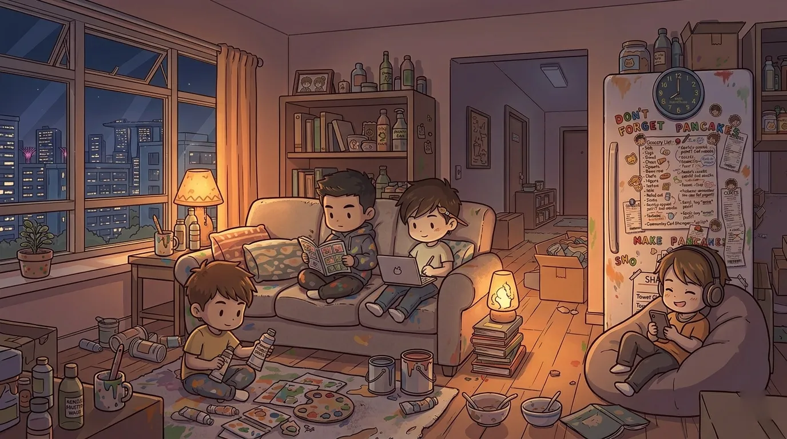
late one night, after everyone had gone to their rooms, sylus stood in the living room.
the apartment was quiet. the paint stains on the floor. the chore chart on the fridge. the empty casserole dish in the sink.
he didn't say anything. (he never did.)
but he thought something. something he would never admit.
this is not what i expected.
but it's not terrible.
zayne was in his room. reading. he heard sylus walk past. heard the floor creak.
he didn't say anything either. but he thought something.
i'm still the only one who does the dishes.
but i don't mind as much as i used to.
rafayel was in his room. painting. he had finished the portrait of sylus. (he would never show it to him.)
he thought something too.
i've lived alone for years. this is louder. messier. more annoying.
but it's also less lonely.
xavier was on the couch. (again.) he wasn't asleep. (for once.)
he looked at the ceiling. at the paint stains. at the light from the window.
he thought the simplest thing.
i think i'll stay.
none of them said it out loud.
but they all felt it.
the lease had six more months.
none of them were looking for new apartments.
home wasn't a place. it was a group chat. a chore chart. a couch with a permanent dent.
it was four people who didn't know how to live together. learning anyway.